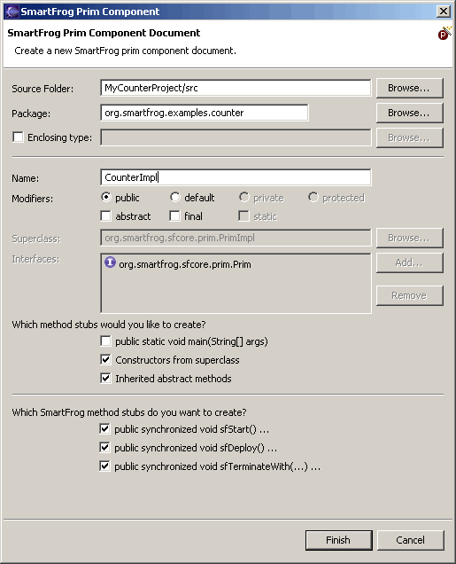
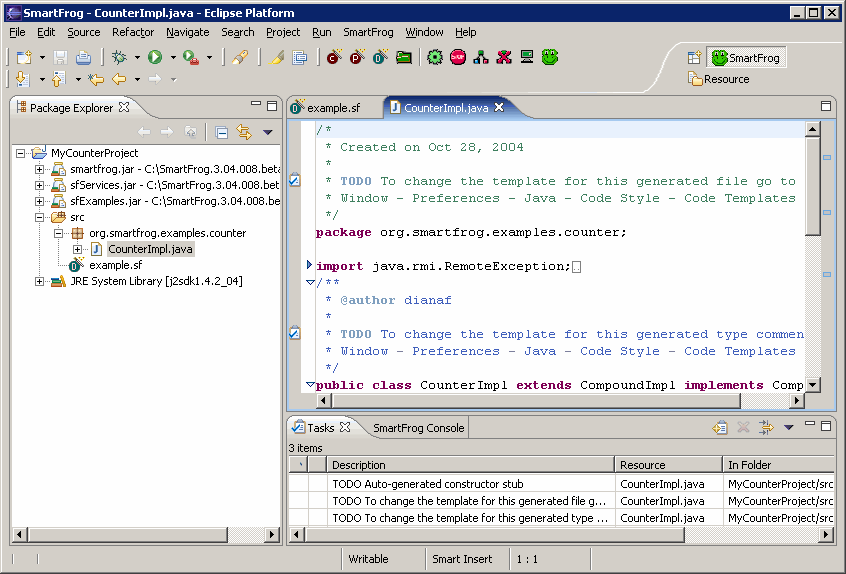
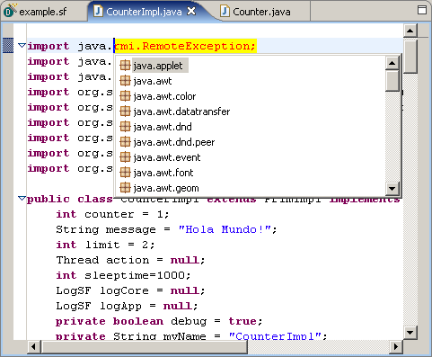
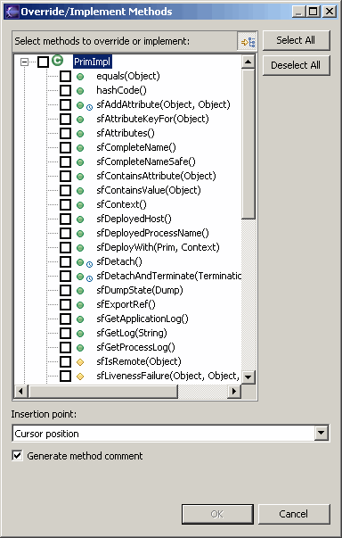

Components using the SmartFrog framework are Java applications that you want to describe, activate, and manage. By using the SmartFrog component model of defining interfaces that the software component must implement, you can support various lifecycle operations such as creation, deployment, and termination.
In the SmartFrog component hierarchy, there are two basic types of components, Prim and Compound. Prim components are the most simple component type available that implement the basic SmartFrog component model. Compound components are components that implement the SmartFrog component model and can contain other components as children. Typically, Java applications that are Prim components implement the Prim interface and extend the PrimImpl class. Compound components implement the Compound interface and extend the CompoundImpl class.
The SmartFrog Eclipse plug-in offers you the convenience of creating both types of Java components using the same IDE in which you created your SmartFrog description files. The IDE provides many specialized features for editing and running Java applications.
To create a Java component file specifying SmartFrog interface APIs in your application so that it can be activated and managed in the runtime environment. In our example, we are creating a Prim component.
NOTE: In our example, we are using the CounterImpl.java file (with slight modifications) located SmartFrog_Install_Dir\src\org\smartfrog\examples\counter directory.

Please note that the procedure for the Compound component is the same except that you would select File > New > Compound Component from the menu bar or alternatively select the icon from the toolbar.
In order to resolve the Counter reference in the CounterImpl.java file, you must import the Counter.java file located in the SmartFrog_Install_Dir\src\org\smartfrog\examples\counter directory into your SmartFrog project.
To import a file into your project:
A pop-up box appears containing the classes contained in the highlighted package.
This opens the Override/Implement Methods dialog, which allows you to select any additional methods you want to override or implement in your Java component file. Once you have selected the methods you want to include in the file, click OK. The skeleton code for the selected methods is automatically generated and inserted into your Java file.There are many other advanced features in the Java editor. For more information, see the Java Development User Guide in the Eclipse online help.
You can create your Java component files using the same IDE that you used to create your SmartFrog description files. The files are located in the same project directory structure providing good organization and easy accessibility. The Java editor in Eclipse has many specialized features that allow for easy creation, modification, and compilation of Java code.